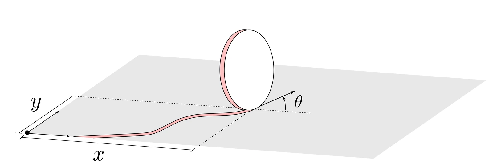
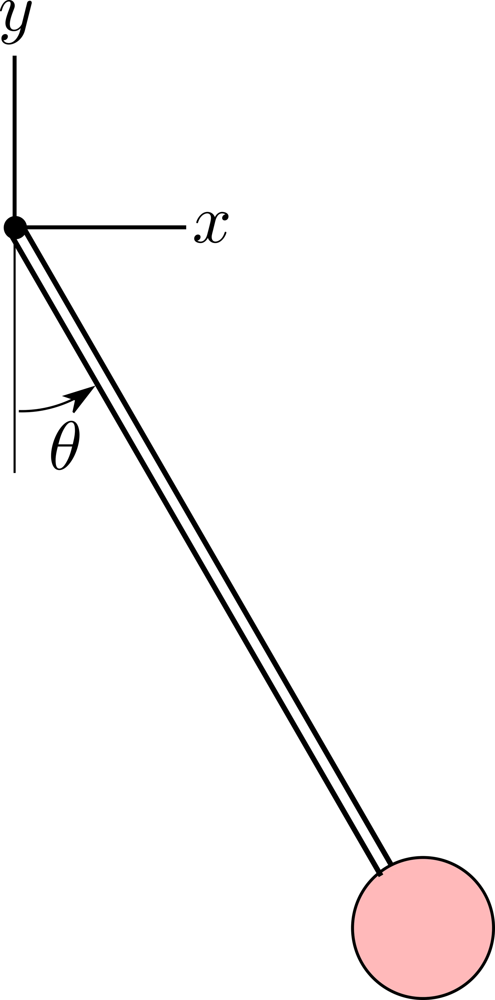
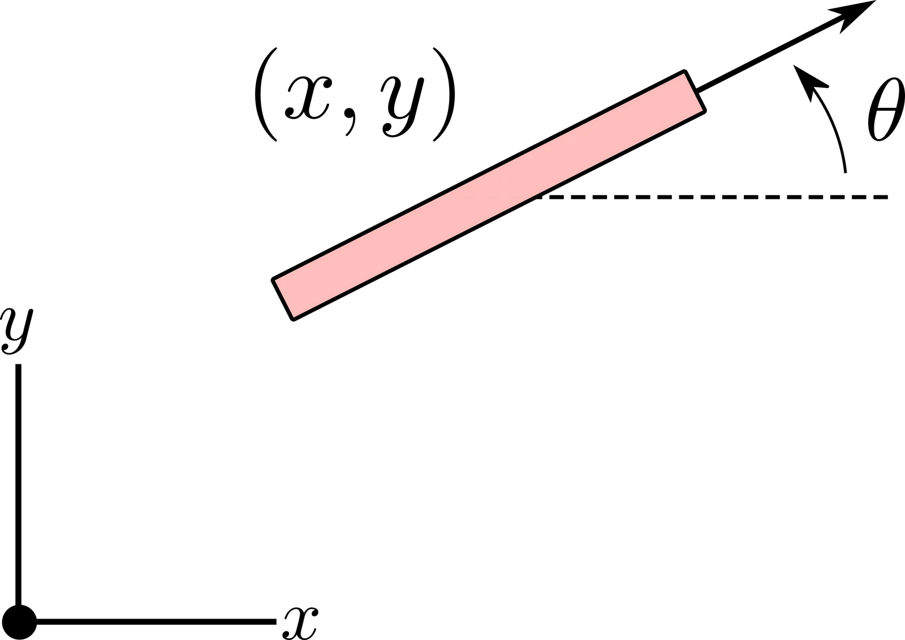
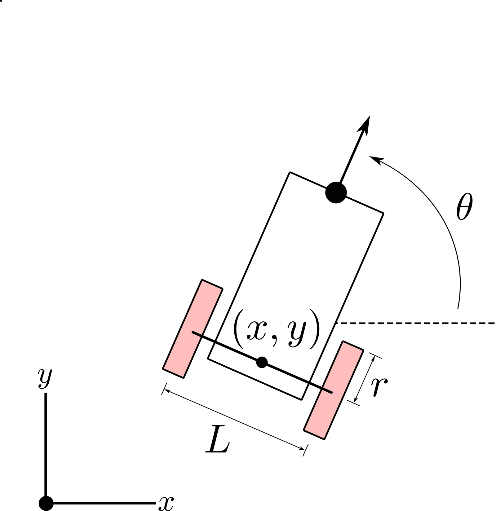
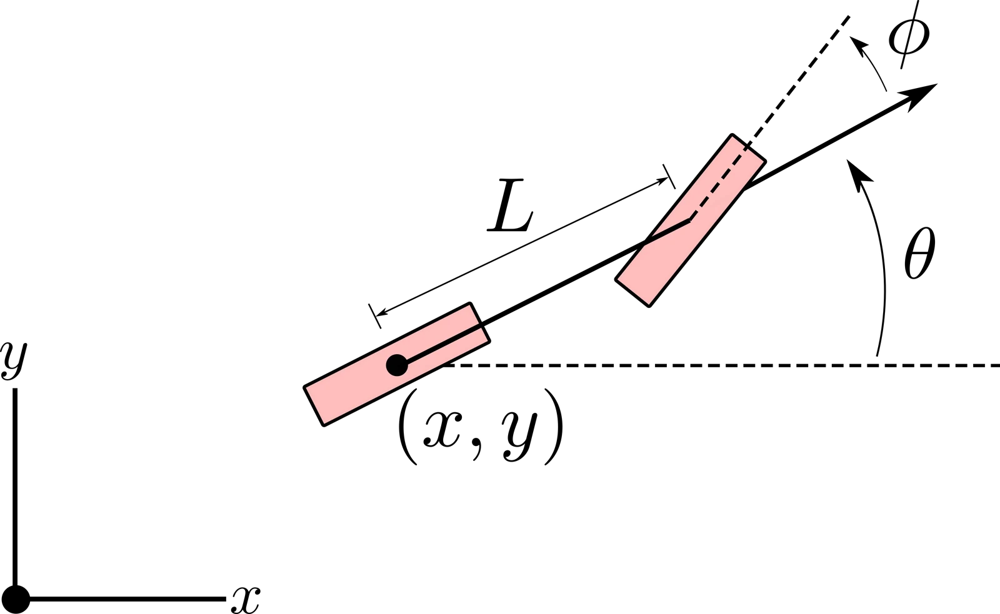
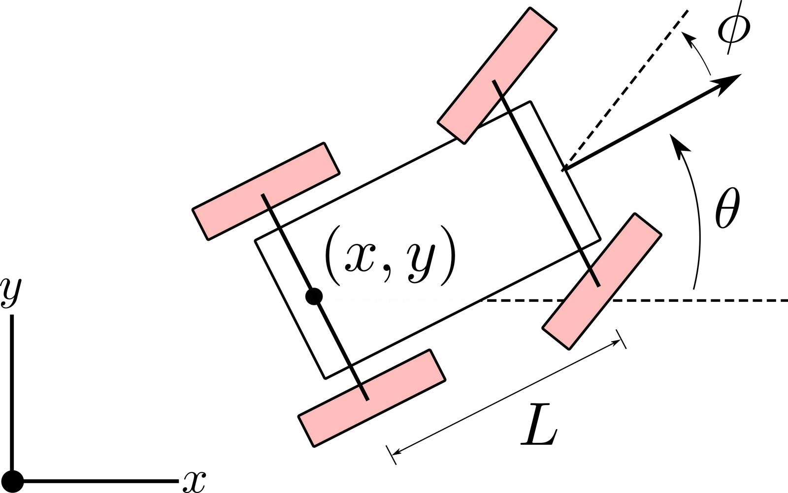
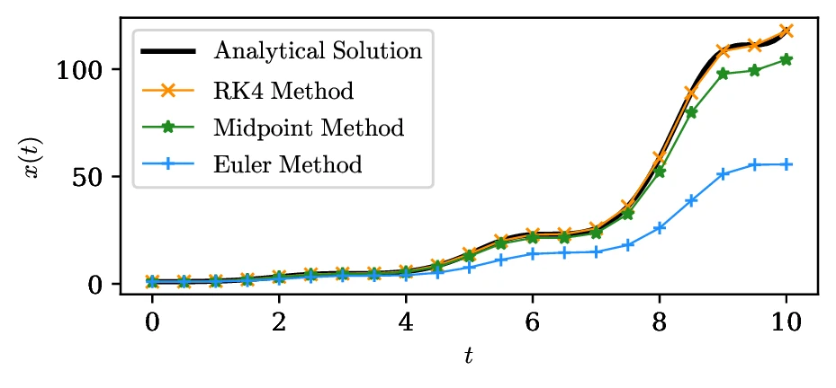
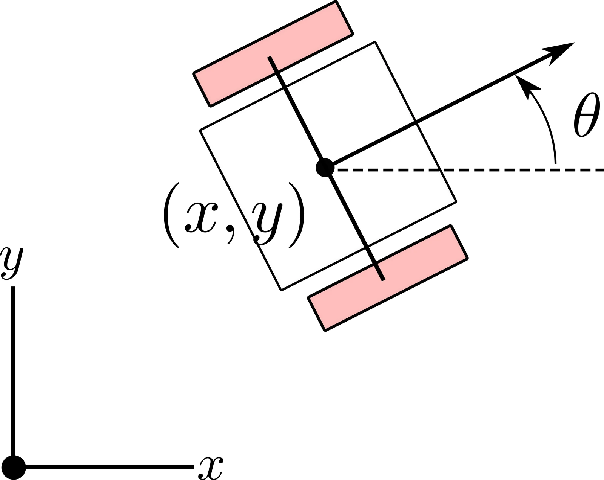

机器人动力学建模
机器人的形态千差万别：结构可以是刚性或柔性的，执行器可以是不同类型的，感知可以来自各种模态的传感器，甚至可以是完全虚拟的智能体。尽管形态如此多样，几乎所有机器人系统都有一个共同的基本特征——它们是随时间演化的动力学（dynamic） 系统。机器人动力学最直观的例子就是物理运动，包括位置、速度、关节构型和传感器姿态的变化。深入理解一个机器人系统的动力学特性，对它的有效设计与控制至关重要。例如，要造出一台能走能跑的双足机器人，就必须对其运动做细致建模，以保证机械结构和执行器能够承受相应的力与力矩。准确的动力学模型同样是设计稳定、高效、响应及时的运动控制策略的前提。
本章介绍机器人系统建模中的若干基础主题。我们首先在 1.1 节引入状态空间模型这一概念，它提供了一个描述机器人状态随时间演化的数学框架。接着在 1.2 节详细说明如何用机器人的运动学与动力学推导出这些状态空间模型，重点讨论支配物理运动与约束的原理。随后在 1.3 节讨论轮式机器人的具体运动模型，包括独轮车与差速驱动模型，以展示这些概念的实际应用。最后在 1.4 节讨论仿真机器人动力学的计算方法，重点是欧拉法与龙格-库塔法这类数值积分方法，用它们近似并分析机器人系统的时间演化。
状态空间模型
状态空间模型是描述动力系统行为的数学框架。每个状态空间模型都由两个关键部分组成：一个状态和一个模型。
动力系统在时刻 的状态，是一组极小的变量 ，使得在给定所有 的控制输入 之后，系统状态 在所有 上的未来演化就被唯一确定，且与系统在 时的行为无关。
形式上，状态是系统历史的充分统计量：给定当前状态和外部输入，系统的未来行为就完全确定，与它是如何到达这个状态的无关。机器人系统的状态可以是有限维的，也可以是无限维的。例如，一个刚体移动机器人可以用有限且低维的状态表示（如质心的位置与速度），而一个柔性机器人可能需要无限维状态来描述机身的连续变形（例如沿机身每一点位移的挠曲函数）。
在为机器人建模时，状态的选取方式必须与应用的目标和需求一致。实践中，往往可以通过省略与当前问题无关的那部分动力学来降低状态表示的复杂度。例如，开发让自动驾驶汽车在城市环境中导航的软件时，只建模它的位置、朝向和速度可能就够了，而把发动机、轮胎、悬架的内部机理抽象掉；反过来，如果这辆车是为高性能赛车设计的，这些细节就变成精确刻画并优化其行为的关键。本书关注状态为有限维的应用，并把状态表示为向量 ，称为状态向量。
状态空间模型的第二个关键部分是模型本身，它给出支配状态随时间演化的规则与方程，把状态与一组输入和输出联系起来。
模型的输入指影响系统行为的外部因素或控制信号。注在不同机器人子领域里，input 常与 control、action 混用。它们可以是力、力矩、电压、指令，或任何驱动系统动力学的外部激励。与状态一样，输入的维数可以不同，但本书假定输入可表示为有限维向量 。
模型的输出是从系统上观测到的变量或测量量。它们通常来自传感器或其他测量设备，反映系统的状态与行为。例如，装了全球导航卫星系统（GNSS）传感器的机器人可以直接测到自己的位置，但测不到朝向。有些情况下状态与输出之间的关系很复杂——比如机器人的惯性位姿与 RGB-D 相机图像之间的关系。从输出反推状态的过程称为状态估计，将在第 11~15 章详细展开。本书假定输出是有限维的，记为向量 。
模型通过两类方程描述动力系统的演化：状态方程与观测方程。状态方程规定状态如何作为当前状态与输入的函数演化，观测方程则定义状态如何影响可测量的输出。
状态方程通常写成微分方程注机器人系统最常用的是常微分方程。但对柔性或可变形结构这类动力学随空间和时间同时变化的复杂情形，可能需要偏微分方程。，描述状态相对某个自变量（通常是时间）的变化：
其中 是状态向量 的时间导数， 是系统的动力学函数。
观测方程的形式为：
其中 表示 时刻的输出， 是把状态与输入映射到系统输出的函数。
状态 、输入 、输出 的定义，加上式 (1.1) 与式 (1.2)，共同构成状态空间模型注有些场合用离散时间差分方程表示系统演化更方便。第 2 章会讨论，离散时间模型特别适合本身按离散步演化的系统，或在计算框架内对连续时间系统作近似。。
本书假定时间是自变量，并对时间相关变量简化记号：用 代替 。相应地， 表示时间导数， 表示二阶导数， 表示高阶导数。
总之，状态空间模型为机器人系统的建模、分析与控制提供了强大的形式化工具。掌握并有效运用状态空间模型，是提升机器人能力、使其能在动态复杂环境中自主导航、交互与适应的关键。
状态空间模型的分类
如式 (1.1) 与式 (1.2) 所示的状态空间模型，可以按两个关键性质分类：线性性与时变性。
若函数 与 不显含时间 ，模型称为时不变的；否则称为时变的。若函数 与 都是状态 与控制 的线性函数，模型称为线性的注通常也叫线性系统。。更一般地，只要系统满足叠加原理就是线性的：对输入线性组合的响应，等于各输入单独响应对应的线性组合。形式化地说，若 与 分别是输入 与 对应的解，那么对任意标量 ，轨迹 就是输入 对应的解。若该性质不成立，系统称为非线性的。
考虑系统：
该模型是线性且时不变的，因为描述系统的函数对 与 都是线性的，且不存在显式的时间依赖。
考虑系统：
该模型由于输出中的二次项 而是非线性的；同时它也是时变的，因为状态方程通过 项显式依赖时间。但要注意，状态方程 本身是线性的——它关于 和 满足叠加原理。因此这个系统的非线性只来自输出方程，而非来自状态动力学。
线性模型及其标准形式
线性模型因其解析上的可处理性和广泛适用性而格外重要。它们通常写成标准矩阵形式：
其中矩阵 具有相应维数，定义了状态动力学与输出上的线性关系。我们把 称为动力学矩阵， 称为控制矩阵， 称为输出或传感器矩阵， 称为直接或前馈矩阵注若 都是时不变的，就得到线性时不变（LTI）系统，它是控制理论的基石。。
尽管许多真实系统本质上非线性，线性模型仍被大量使用，因为它们简单、易处理。一种常见做法是围绕特定工作点用线性化把非线性系统近似为线性模型。第 3 章会讨论，这种做法简化了分析与控制设计，使线性模型成为工程与控制理论中的基础工具。
把高阶模型转成状态空间形式
式 (1.1) 描述的状态空间模型由一阶微分方程表示。但许多机器人应用涉及高阶微分方程模型，例如机械臂或轮式机器人的动力学。为了在统一框架下分析与控制这些系统，可以引入额外的状态变量，把高阶模型转成一阶状态空间形式。
考虑一个 阶线性微分方程：
其中 为常数， 是状态变量。要把它转成状态空间形式（即一组一阶微分方程），可以定义一个 维状态向量：
由 、、 等等，可把该高阶微分方程写成一阶状态空间方程组：
在这个具体情形下模型是线性的，因此可以写成矩阵形式：
来看一个实际例子：
机械臂、轮式机器人等许多机器人系统的动力学都可用牛顿第二定律描述。掌握如何把这些高阶动力学转成状态空间形式，对控制与分析大量机器人系统至关重要。
牛顿第二定律描述质量 在力 作用下的加速度响应：
其中 表示质量在一维方向上的位移。这种形式的牛顿第二定律是双积分器系统的经典例子注在控制理论中，双积分器指输出（这里是位置 ）由输入（加速度）积分两次得到的系统。。
要把这个二阶微分方程转成状态空间形式，先定义状态向量：
然后把动力学写成状态空间形式：
其中 表示施加的力 。通过定义状态向量 并以这种方式重写原来的二阶微分方程，我们实际上已把它转换成了一组一阶微分方程。
运动学与动力学
理解机器人的物理运动，是实现自主运行的前提。例如，必须确定自动驾驶汽车的油门与转向动作如何影响它的状态以及它与环境的交互；同样，也必须理解机械臂的运动如何影响它操作物体的能力。理解这一点的一个关键方面，是运动学与动力学这两个概念，它们支配机器人的物理运动以及必须遵守的约束。
运动学研究物理系统的运动，关心位置、速度、加速度随时间的变化，而不涉及产生该运动的力或力矩。
机器人的运动学给出了由物理状态或几何结构决定的运动限制。这些约束来自系统的物理结构，例如关节限位、执行器布置、连杆几何，以及各部件之间的机械连接方式。它们决定了系统能怎么动，与任何外力无关。以轮式机器人为例：静摩擦阻止车轮侧向滑动，也就是它无法沿平行于转轴的方向移动。这条运动学约束显著限制了机器人的可通行能力，并影响其整体机动性。理解这些约束，就能更好地把握机器人在环境中可行的运动方式，进而知道它如何有效地与世界交互。
动力学研究由作用其上的力与力矩所决定的物理系统运动。它要把系统的运动与该运动背后的物理成因（如重力、摩擦或施加的输入）联系起来。
在机器人或机械系统中，动力学通常由牛顿第二定律支配，即物体的加速度与作用其上的合力成正比。例如，自动驾驶汽车的动力学由它的加速度与所受外力之间的关系描述，这些外力包括轮胎—路面相互作用、坡道上的重力分量以及空气阻力。
由上可知：运动学描述来自机器人物理状态或几何的约束，而动力学解释力或输入如何影响机器人运动。本节先引入广义坐标这一概念来定义机器人的物理构型，并讨论如何用这些坐标表达运动学与动力学；然后演示如何用系统的运动学与动力学，为机器人的物理运动定义状态空间模型。后续章节会探讨如何用这些模型设计鲁棒、高性能的运动规划与控制算法。
广义坐标
机器人的物理状态，也称为它的位形（configuration），完整地指定了某一瞬间机器人上每个点的位置注Lozano Perez, T. “Spatial planning: a configuration space approach.” Autonomous Robot Vehicles, 1990.。位形可以用一组称为广义坐标的变量表示，记作 。广义坐标是一组参数，唯一地描述机器人相对于某个参考系的位形。视系统而定，它们可以是关节角、笛卡尔位置、姿态，或其他定义机器人物理排布的参量注configuration 与 generalized coordinates 两个词常被混用。位形指机器人在空间中的物理排布，广义坐标则是该排布的一种具体数学表示；同一个位形可以有多种广义坐标取法。。
重要的是，位形（即广义坐标）通常只构成完整系统状态 的一部分。如前所述，在状态空间模型中，状态是在给定外部输入后足以确定系统未来演化的完整变量集合。这通常既包括广义坐标 ，也包括它们的时间导数，即广义速度 。在有些系统中，状态还可能包含额外的内部变量，例如执行器动力学、传感器状态或环境参数。
如图 1.1 所示，平面上滚动的一个轮子，其位形可以用三个参数表示：接触点位置坐标 ，以及相对于固定参考系的航向角 。这组参数 只是定义轮子位形的一种可选广义坐标。另一种做法是用航向角 加上接触点位置的极坐标表示。

运动学约束
一旦选定一组广义坐标 来表示机器人的位形，就可以找出该机器人相关的运动学约束。这些约束建立广义坐标与广义速度之间的关系，从而描述机器人运动的限制。关于机器人运动学与相关约束方程的系统论述，可参见 Siciliano 等（2008）注Siciliano, Bruno, Sciavicco, Lorenzo, Villani, Luigi, Oriolo, Giuseppe. Robotics: Modelling, Planning and Control. Springer, 2008.。
运动学约束是施加在广义坐标 与广义速度 上的一组约束，数学上写为：
其中 是约束个数， 是广义坐标的个数。
在许多机器人应用中，运动学约束对广义速度是线性的。这类约束称为普法夫（Pfaffian）约束，可写为：
其中 。普法夫约束也可以紧凑地写成矩阵形式：
其中 。
图 1.2 给出了一个单摆：一个点质量通过一根刚性无质量的杆绕固定支点旋转。我们可以选择用质量的笛卡尔坐标位置来表示单摆的位形，假定支点为参考系原点。此时广义坐标向量为 ，广义速度向量为 。连接支点与质量的杆是刚性的，这一事实给系统运动引入了限制，可用运动学约束表示：
其中 是杆长。该约束不是普法夫形式，但可以等价地改写：注意
对式 (1.8) 中的单摆约束，有
因此可以把该约束写成式 (1.6) 的普法夫形式，其中
只要单摆从满足 的状态 出发，式 (1.9) 的普法夫约束就蕴含式 (1.8) 成立。
另一种表示单摆位形的广义坐标选择，是取竖直方向与摆杆朝向之间的夹角 ，即 。这种选择完整地指定了位形，无需再定义任何运动学约束，因此对该系统更自然。注意由于 、，式 (1.8) 的运动学约束对任意 都自动满足。

考虑图 1.1 中的轮子，用广义坐标 表示。对该系统，可以假定轮子与地面接触点处的摩擦形成无滑移条件。这条无滑移条件是对轮子运动的约束：轮子速度的侧向分量必须始终为零。由于单位向量 描述轮子的航向，侧向由垂直单位向量 给出。侧向速度可由侧向单位向量与速度向量 的点积算出，于是得到无滑移运动学约束：
该约束对广义速度 是线性的，因此是一条普法夫约束。
完整约束与非完整约束
运动学约束通常分为两类：完整（holonomic） 与非完整（nonholonomic），取决于它如何限制系统运动。完整约束可以只写成广义坐标的函数，不含广义速度；而非完整约束涉及广义速度，无法仅用广义坐标表达。
能写成
形式的运动学约束，称为完整约束。
在机器人应用中，完整约束一般来自机械连接，例如机械臂的刚性连杆与关节。只受完整约束的系统称为完整系统。这类约束是运动学约束中一个特殊子类，它限制了系统可达的位形：具体地，一个有 个广义坐标、受 条完整约束的系统，其可达位形空间的维数是 。完整约束总可以等价地写成式 (1.6) 那样的普法夫约束，因为
而对表达式求导得
正如示例 1.5 所演示的。但要注意，并非所有普法夫约束都是完整的。一条普法夫约束要成为完整约束，必须能积分成式 (1.11) 的形式：即存在标量函数 使
这意味着该普法夫约束积分后得到的约束只依赖广义坐标 ，不显含其时间导数 。
回到示例 1.5 的单摆。式 (1.8) 的运动学约束把摆球限制在半径为 的圆上，这是所有可能广义坐标的一个子集。该约束是完整约束，因为可以把它写成只含广义坐标的函数。
回到示例 1.6 的轮子，其运动学约束式 (1.10) 限制的是运动方向。与单摆不同，这条约束并不妨碍轮子到达任何广义坐标位形（即位置与航向）。从数学上说，式 (1.10) 无法积分成 的形式，因此它不是完整约束。
完整约束限制系统可达的位形，而运动学约束也可以限制位形之间的运动方式。后者我们称为非完整约束。至少含一条非完整约束的系统称为非完整系统。
可以写成普法夫形式 、但无法积分成 形式的约束，称为非完整约束。
也就是说，这类普法夫表达式不能写成某个只依赖广义坐标的标量函数的时间全导数；换句话说，不存在标量函数 使 。从几何上看，非完整约束把瞬时广义速度限制在 的零空间内，其中 是以各条非完整约束对应的向量 为行的矩阵。
回到示例 1.6 的轮子，它有一条非完整约束：
此时 的零空间由向量 与 张成，说明所有运动都必须由这两个向量的线性组合构成。直觉上正是如此： 是滚动方向， 是轮子绕其转动的轴。
总结一下：完整约束把系统位形限制在更低维的流形上——具体说，是由 这类标量方程定义的等值面。一个有 个广义坐标、 条独立完整约束的系统，其位形空间实际上被降到 维流形。这种降维意味着位形空间中真正的可达性损失：系统只能沿由初始条件和约束方程确定的受限位形子集演化。相比之下，非完整约束直接作用在系统的瞬时速度上，通常写成 的普法夫形式，其中 是 的满秩矩阵。这类约束在每个位形处把 限制在某个 维子空间内，从而限制允许的运动方向。但由于非完整约束不可积，它们并不降低位形空间本身的维数：虽然每一瞬间的运动都被约束，系统仍可能通过满足速度约束的可行轨迹到达位形空间中的任意位形。因此，完整约束减少独立位形变量的个数，把系统限制在位形空间的低维子集里；非完整约束则保留位形空间的完全可达性，但限制在该空间中穿行的方式。
运动学模型
选好一组合适的广义坐标 、并找出相关运动学约束之后，就可以把这些约束转成式 (1.1) 形式的状态空间模型，我们称之为运动学模型。
给定广义坐标向量 以及 条普法夫约束注这些普法夫约束可以同时来自完整约束与非完整约束。 ，运动学模型是如下形式的状态空间模型：
其中 是输入， 的列空间张成 的零空间。
中的每个输入对应系统的一个自由度；对任意初始条件 与任意输入序列 ，运动学模型的解都必然满足这些普法夫约束。为说明这一点，可把模型写成等价形式：
其中 是 的第 列， 是第 个输入。写成这种形式后容易看出，每个输入都通过由向量 定义的特定模式作用于广义速度 。由于定义 1.8 已规定 的列空间张成 的零空间，按定义就有
对任意输入 与所有坐标 成立。因此按定义，输入向量的每个分量只能以符合普法夫约束的方式影响广义速度。从数学上也可以把运动学模型代入普法夫约束方程直接看出：
回到示例 1.6 的滚动轮，它有一条非完整约束：
其中 。 的零空间由 与 张成，因此运动学模型为
在这个例子里，输入 与 有直观的物理意义： 是轮子前进的速度， 是轮子的角速度。
动力学模型
运动学模型描述限制机器人运动的几何约束——例如机械臂只能绕关节转动。但仅有运动学并不能解释运动是如何产生或被抵抗的。为此要借助动力学，它描述力与力矩如何通过产生加速度来影响运动。
牛顿第二定律是机器人动力学的基础，它把作用在物体上的合力与其加速度联系起来。对单个点质量，该定律写作
其中 是质点质量， 是位置向量， 是作用在质点上的总力。
动力学研究中的一个基本例子是一维质量-弹簧-阻尼系统：一个质量 连接在弹簧和阻尼器上，被约束沿直线运动。作用在质量上的总力通常由三项组成：
- 外部输入力 ，
- 抵抗偏离平衡位置的弹簧力 ，
- 抵抗速度的阻尼力 。
质量所受合力为
其中 与 分别是弹簧系数与阻尼系数， 是相对平衡位置的位移。把该式代入牛顿第二定律，得到如下二阶微分方程：
该方程描述带阻尼的振荡运动，在机器人应用中经常出现——例如分析关节柔顺性、执行器动力学或接触交互时。
质量-弹簧-阻尼系统展示的是一维单个质点的动力学，而真实机器人系统往往更复杂。为刻画它们的行为，需要把牛顿第二定律推广到相互连接的质点系统，在机器人学中通常建模为刚体。刚体是一种理想化对象：无论外力如何，其所有组成质点之间的相对位置都保持不变。这一假设意味着物体不发生形变，从而可以把由大量相互作用的质点组成的复杂系统，简化为由有限个参数（例如固连于机体的坐标系的位置与姿态）支配的模型。因此，刚体动力学为分析与仿真机器人系统提供了强大而可处理的框架注刚体假设可能不成立的典型例子包括软体机器人、带柔性末端的机器人，以及采用轻质柔性结构的机器人。。
刚体在三维空间中的运动可以从平动与转动两方面描述。平动动力学支配质心的运动，由牛顿第二定律给出，即式 (1.16)，其中位置变量特指质心。在三维空间中刚体有三个平动自由度，分别对应沿各笛卡尔轴的运动。转动动力学则描述物体姿态如何随时间演化。刚体在三维空间中还有三个与姿态相关的自由度，对应绕各主轴的转动。与平动不同，姿态不能用单个向量表示，常用几种参数化方式：旋转矩阵给出完整无歧义的表示，代价是冗余；欧拉角用三次旋转的序列表示姿态；四元数则提供紧凑、无奇异的替代方案，很适合数值计算。
刚体的转动动力学注关于转动动力学与姿态表示的深入讨论，可参见 Shuster (1993)。由角动量的时间演化支配，具体写为
其中 表示作用在刚体上的总外力矩（力矩）， 是角动量（通常相对质心计算）。这一关系常被称为转动动力学的欧拉方程，它刻画了施加的力矩如何改变刚体的转动运动。
除牛顿-欧拉方法（即式 (1.16)–(1.17)）之外，推导刚体运动方程的另一种方法是拉格朗日方法。它和广义坐标、广义速度、运动学约束这些概念紧密相关，采用基于能量的思路。在拉格朗日方法中，刚体的动力学由标量拉格朗日量导出，其定义为动能与势能之差：
其中 与 分别是系统的动能与势能。系统的演化由拉格朗日方程注Siciliano, B., Sciavicco, L., Villani, L., Oriolo, G. Robotics: Modelling, Planning and Control. Springer, 2008.注Lynch, K. M., Park, K. C. Modern Robotics: Mechanics, Planning, and Control. Cambridge University Press, 2017.支配，它同时包含外部作用与运动学约束。在无约束情形下，运动方程为
其中 是与广义坐标 对应的非保守广义力注广义力是物理力与力矩在广义坐标空间中的投影。不能由势函数导出的力（例如摩擦力）称为非保守力；重力这类力则是保守力。， 对应系统的自由度。式 (1.19) 描述了作用在系统上的广义力与其位置、速度、加速度之间的关系，给出了由动能和势能系统化导出动力学模型的途径。
存在普法夫约束时注拉格朗日方法可以处理一般约束，这里为简洁只讨论普法夫约束。，拉格朗日方程变为
其中 是第 条普法夫约束向量 的第 个分量， 是拉格朗日乘子。前 个方程描述广义坐标在外力与约束力共同作用下的动力学，其余 个方程就是运动学约束本身。因此完整系统包含 个方程、 个未知量（广义坐标与拉格朗日乘子），通常称为标准非完整形式。若系统是完整的、且广义坐标取为相互独立的，则约束自动满足，拉格朗日方程退化为式 (1.19) 中更简单的无约束形式。
再次考虑图 1.2 中的单摆。为对其建模，我们分析重力如何驱动摆球运动。这里将演示四种不同的运动方程推导方式——分别使用笛卡尔坐标与极坐标，并分别应用牛顿-欧拉方法与拉格朗日方法。这一对比能说明广义坐标的选择如何影响推导的复杂度。
方式一：笛卡尔坐标 + 牛顿法。 先用牛顿第二定律推导单摆动力学，关注作用在摆球上的两个力：重力与杆的作用力。假定杆的力沿其轴线方向。由于摆长固定，该力必须抵消重力沿杆方向的分量，并提供所需的向心加速度。杆施加的轴向力为
其中 是摆球质量， 是重力加速度， 是杆长， 是摆球速度。重力为
沿 轴负方向。为在笛卡尔坐标下计算合力，把杆的力与重力分别投影到 、 轴上：
代入式 (1.16) 定义的牛顿第二定律，得到运动方程
要把这些方程完全用笛卡尔坐标表示，代入 与 ，得到
其中 。这种做法需要细致的受力分析，因为运动学约束（杆长固定）是通过杆力的投影分量隐式处理的。
方式二：笛卡尔坐标 + 拉格朗日法。 作为用笛卡尔坐标推导运动方程的第二种方式，改用拉格朗日方法，会得到略微简洁的形式。先定义动能与势能：
并注意不存在外部非保守广义力注重力是保守力，因此不出现非保守广义力。。如示例 1.5 所述，系统的唯一一条普法夫约束为
于是用式 (1.20) 的拉格朗日方程得到
对约束关于时间求导，可解出拉格朗日乘子 ：
再把式 (1.22) 前两式中 、 的表达式代入，得
解得
其中用到 与 。最后把 代回运动方程并化简，得到
与前面用牛顿法在式 (1.21) 得到的结果一致。
方式三：极坐标 + 欧拉方程。 用笛卡尔坐标分别走完牛顿-欧拉与拉格朗日两条路之后，现在换成极坐标重做一遍。为应用式 (1.17) 的转动动力学欧拉方程，取固连于支点的坐标系。重力对摆球的作用产生关于支点的力矩
而系统关于同一点的角动量为
其中 是关于支点的转动惯量注在欧拉方程中，转动惯量的作用类似于牛顿第二定律中的质量。。代入欧拉方程即得系统动力学
比笛卡尔坐标下的对应方程紧凑得多。
方式四：极坐标 + 拉格朗日法。 使用极坐标 时，拉格朗日方法也变得显著简单，因为无需显式处理普法夫约束。此时系统的动能与势能为
应用式 (1.20)，并注意到没有非保守广义力、也没有约束，得到运动方程
与预期一致，和式 (1.24) 用欧拉方程推出的结果相同。
轮式机器人运动模型
机器人的形态、尺寸与构型多种多样，每种都有面向特定应用的移动方案。其中轮式机器人尤为常见，因为其机动性好、结构简单。本节演示如何把前面几节的概念用于两类经典且广泛使用的简单轮式机器人运动模型：独轮车模型与差速驱动模型。
独轮车模型

独轮车模型是描述机器人运动的最简单运动学模型之一。它沿用示例 1.6 中滚动轮的运动学，本质上假定机器人只受单个轮子的无滑移约束。图 1.3 给出了独轮车模型的广义坐标示意。
其运动学模型与式 (1.15) 完全相同，即
其中 表示前进速度， 表示转动角速度。
独轮车模型或许是对机器人真实运动学的简化表示，但在许多不需要细致动力学的场合仍然很有价值。它的主要优势是简单，往往能带来计算效率更高的算法。实践中，这类低保真模型常用于系统设计或决策过程的早期阶段，等需要更高精度时再细化或用更准确的模型补充。
差速驱动模型

差速驱动模型是上一节独轮车模型的变体：两个驱动轮固定在共用后轴上，前方一个被动轮不引入额外的运动学约束。它使用与独轮车模型相同的广义坐标 ，但还需要定义若干几何参数：后轴宽度 与车轮半径 ，如图 1.4 所示。
差速驱动模型假定车轮无滑移滚动，因此其运动学约束的推导与示例 1.6 的单个滚动轮类似。每个车轮的航向向量为 ，侧向为 。用侧向向量定义两轮的无滑移运动学约束：
其中 与 分别是左、右轮的速度向量。接下来利用机器人几何，把轮速向量 、 表示成广义坐标与广义速度的函数。左、右轮心位置 、 可由广义坐标算出：
对这些位置求时间导数，得到速度向量
经过一些代数整理可发现，两轮的无滑移运动学约束是等价的：
说明两轮的无滑移约束是冗余的，与示例 1.6 中单轮约束相同。这符合直觉：两轮刚性连接，如果一个轮子不能侧向移动，另一个也不能。差速驱动模型的运动学模型也与式 (1.26) 的单轮模型相同，但输入现在可以写成更贴近机器人实际几何的形式。
具体来说，差速驱动模型不用前进速度 与机体转动角速度 作为输入（如式 (1.26)），而是用左、右轮的转动角速度 与 。借助机器人几何与无滑移假设，可以导出这两组输入之间的关系。首先，把位置 用轮心位置表示为 ，于是速度向量为 。由无滑移假设，速度可写成 ，从而
其中 是车轮半径， 与 分别是左、右轮的速度。此外，每个轮子的无滑移条件为 、，展开即
由于 ，可化简为
两式合并得
由此建立了广义速度 与车轮转速之间的关系。
综上，输入之间的映射可写为
据此得到差速驱动模型：
尽管比独轮车模型稍复杂，该模型借助机器人几何让输入更直观，因此在某些运动规划与控制任务中更合适——机器人的驱动通常就来自安装在轮轴上的电机。
更一般地说，运动学状态空间模型应当只被看作更完整动力学模型的一个子系统。运动学模型通常假定可以直接控制某些运动变量（例如速度或角速度），而不考虑这些量在物理系统中如何产生、如何受限。为更真实地建模，往往需要在控制输入前面补上额外的积分器。
式 (1.26) 引入的独轮车模型假定可以直接控制前进速度 与角速度 ，状态为 。若考虑到速度 本身是加速度输入 积分的结果，可以把 也当作状态，得到增广状态 与输入 。动力学变为
这种动态扩展把加速度作为控制输入，从而能对更真实的场景（例如存在执行器限幅的情形）建模。
自行车 / 简化汽车模型
自行车模型是一种常用的简化运动学模型，用来近似带两个前转向轮、两个后驱动轮的车辆（例如汽车或几何类似的移动机器人）的运动。该模型刻画关键的转向动力学，同时假定车轮接触点处无滑移。之所以叫"自行车"模型，是因为它把两个前轮和两个后轮分别合并为一个前轮与一个后轮，二者位于同一轴线上，构成一辆虚拟的两轮车。与前面介绍的独轮车和差速驱动模型相比，自行车模型施加了更真实的转向运动学约束：它反映了车辆必须通过转向来沿曲线路径行驶、不能原地旋转这一事实。因此在保持相对简单的同时，它对许多轮式系统是更好的近似。
图 1.5 给出了自行车模型的简化几何。按前几节的讨论，该模型可以通过对每个轮子的滚动方向施加非完整约束、并假定理想无滑移接触推导出来。图 1.6 展示了同一运动学模型如何对应到四轮车辆。关键点是：两个前轮以共同的转向角 转向，车辆以速度 前进，并满足无滑移约束。这些假设给出如下描述汽车模型的微分方程：


其中 是后轴中心位置， 是航向角， 是前进速度， 是转向角， 是轴距（前后轴之间的距离）。因此状态定义为 ，控制输入为 。
动力学仿真
在 1.1 节我们引入了状态空间模型，用数学方式描述机器人状态随时间的演化；在 1.2 节演示了如何用机器人的运动学与动力学推导出表示其物理运动的状态空间模型。本节介绍若干仿真机器人状态随时间变化的计算技术。
式 (1.1) 的状态空间模型是一般形式的常微分方程组，多数情况下无法解析求解。数值仿真提供了获得近似解的实用途径，使我们能更好地理解机器人动力学，并测试与验证机器人自主性的算法。通常说仿真一个系统，指的是近似求解式 (1.1) 微分方程组的初值问题（IVP）：
其中 ，输入 既可以显式定义为时间的已知函数（例如预先给定的控制序列），也可以在每一步根据当前状态计算。
该初值问题的目标是：从 出发，找出满足该微分方程的轨迹 注若 关于 满足 Lipschitz 连续、关于 连续，则轨迹 存在且唯一。。由微积分基本定理注它表达了微分与积分的互逆关系：对导数 关于时间积分即可还原原函数 。， 时刻的解可写成
一般来说，对任意函数 解析地计算这个积分是不可行的。因此通常采用时间离散化的数值积分方法：
其中 定义一个时间网格，每个区间的宽度为 。这种分解把连续的积分问题拆成一系列短区间上的小积分之和。在每个区间 内，就可以用各种数值求积规则来近似积分——例如欧拉法、中点法或更高阶的龙格-库塔格式——它们在计算代价与精度之间做权衡。本节简要介绍几种最常用的方法。
为演示不同的数值积分方法，考虑下面这个初值问题（对应算法 1.1）：
目标是用各种积分方法在区间 上近似轨迹 。
import numpy as np
# Define the derivative function h(x, t)
def h(x, t):
return x * np.sin(t) ** 2
# Define initial conditions and final time
x0 = 1.0 # Initial state x(t0)
t0 = 0.0 # Initial time t0
tf = 10.0 # Final time tf
Δt = 0.5 # Discretization step
t = np.arange(t0, tf + Δt, Δt) # Array of timestamps
# Compute analytical solution
x_true = x0*np.exp(((t-t0) - np.sin(t-t0)*np.cos(t+t0))/2)
def integrate(h, x0, t, method):
x = np.zeros((t.size, x0.size))
x[0] = x0
for i in range(t.size - 1):
Δt = t[i + 1] - t[i]
x[i + 1] = method(h, x[i], t[i], Δt)
return x
def method(h, x, t, Δt):
# Implement here numerical integration method
# Test a specific numerical method
x_method = integrate(h, x0, t, method)算法 1.1： 一个用于演示的初值问题定义。该示例代码见仓库 github.com/StanfordASL/pora-exercises 中的 notebook ch01/simulation.ipynb。下面几节会依次尝试不同的数值积分方法，并把它们实现在自定义的 method 函数里。
具体来说，我们将用不同方法去近似下面的解析解：
在我们的初始条件 、 下，它简化为
欧拉法
在离散化问题的每个时间区间内近似积分（如式 (1.30) 所示）的最简单技术之一，是欧拉法注以瑞士数学家 Leonhard Euler 命名，常称为前向欧拉法。。该方法用区间起点处的被积函数值来近似短区间 上的积分。
由于轨迹 满足
欧拉法假定 在该区间内为常数，从而近似为
其中 是时间步长。
该近似对应一阶泰勒展开：
即把变化率 视为区间内不变。
另一种理解方式是把欧拉法看作时间导数的有限差分近似：
欧拉法计算开销很小，但由于只依赖每个区间起点的信息，精度有限。其局部截断误差注即单个时间步内引入的误差。为 阶；除非步长取得很小，否则误差在长轨迹上会显著累积。
作为具体说明，示例 1.14 的简单实现见算法 1.2。
def euler(h, x, t, Δt):
return x + Δt * h(x, t)
x_euler = integrate(h, x0, t, euler)中点法
中点法是欧拉法的改进：它把导数取在时间区间的中点而非起点，从而提升精度。回顾一下，欧拉法用 时刻的导数 近似下一状态：
相比之下，中点法用 处的导数值来近似积分：
这样估计更准确，但它还不是显式的，因为 事先并不知道。
为此，用一个步长为 的欧拉步来近似中点：
把这个估计代回，就得到中点法的显式形式：
中点法把局部截断误差从欧拉法的 降到 ，在小步长下精度显著提高。代价是每步要计算两次导数——一次在区间起点，一次在中点。
示例 1.14 的简单实现见算法 1.3。
def midpoint(h, x, t, Δt):
t_mid = t + Δt / 2
x_mid = x + (Δt / 2) * h(x, t)
return x + Δt * h(x_mid, t_mid)
x_midpoint = integrate(h, x0, t, midpoint)龙格-库塔四阶法
欧拉法与中点法都通过在区间内一个或两个特定点上求导数 ，来近似一个时间步内 的变化量。龙格-库塔族方法把这一思想推广：用多次导数求值换取更高精度。该族中最常用的方法之一是四阶龙格-库塔法注常缩写为 RK4。，它在区间 上计算四个导数估计：
其中
RK4 把局部截断误差降到 ，精度明显优于欧拉法与中点法。代价是每步要计算四次 ，但对许多实际应用而言，该方法仍然计算高效且稳定。
示例 1.14 的 RK4 实现见算法 1.4。
def rk4(h, x, t, Δt):
k1 = h(x, t)
k2 = h(x + (Δt / 2) * k1, t + Δt / 2)
k3 = h(x + (Δt / 2) * k2, t + Δt / 2)
k4 = h(x + Δt * k3, t + Δt)
return x + (Δt / 6) * (k1 + 2 * k2 + 2 * k3 + k4)
x_rk4 = integrate(h, x0, t, rk4)为比较这几种方法的表现，可以把它们的输出与解析解画在一起：

需要强调的是，先进的仿真技术远不止这些数值积分方法，它们能够对机器人系统做高保真仿真，包括像素空间中的可视化。这些技术可以融合细致的物理建模、传感器数据融合以及基于学习的方法，从而构造真实而准确的仿真注一个典型例子是用神经辐射场（NeRF）生成照片级真实的场景。。正如后续关于感知的章节会讨论的，这些进展对机器人训练、不确定性下的规划，以及在新颖且未见场景中评估自主性栈都至关重要。
本章小结
本章介绍了机器人系统建模与仿真背后的基本原理。我们先引入状态空间模型，它提供了描述机器人状态随时间演化的数学框架；接着讨论机器人的运动学与动力学，它们刻画机器人的运动以及作用其上的约束，其中包括广义坐标、运动学约束（完整与非完整），以及用普法夫约束构造运动学模型的方法。全章贯穿了若干实例，如滚动轮、单摆，以及独轮车、差速驱动这类轮式机器人。最后介绍了用于仿真机器人动力学随时间演化的数值积分技术，给出了欧拉法、中点法与龙格-库塔法，并用具体代码示例说明它们的取舍与应用场景。
如果希望更深入、更严格地学习本章内容，Siciliano 与 Khatib（2007）、Siciliano 等（2008）注Siciliano, B., Khatib, O. Springer Handbook of Robotics. Springer-Verlag, 2007. Siciliano, B., Sciavicco, L., Villani, L., Oriolo, G. Robotics: Modelling, Planning and Control. Springer, 2008.提供了全面且被广泛采用的参考书。这些教材更深入地覆盖了机器人运动学、动力学与控制的数学基础，并给出更多例子、推导与习题，与本章内容互为补充与延伸。
练习
练习的初始代码在 GitHub 上公开。在终端中执行以下命令即可下载：
git clone https://github.com/StanfordASL/pora-exercises.git练习 1：数值积分方法
我们在示例 1.14 中引入了一个简单的初值问题，并在图 1.7 中比较了欧拉法、中点法与四阶龙格-库塔法求解它的差异。本练习将使用 SciPy 提供的更高级数值积分方案 odeint。打开 notebook ch01/exercises/simulation.ipynb，为阻尼单摆与自行车实现动力学模型，然后用 odeint 对它们做仿真。
练习 2：非完整轮式机器人动力学
本练习的目标是熟悉书中后续会一直用到的 Python 基础（例如 NumPy 与继承），以及控制非完整轮式机器人的技术。
考虑一个两轮简单机器人，其状态由轴中心位置与航向角定义，如图 1.8 所示。它的运动可用最简单的非完整轮式机器人模型——独轮车模型——描述。

我们将使用的运动学模型体现无侧滑滚动约束，如下式所示：
在该模型中，机器人状态为 ，其中 是机器人中心的笛卡尔位置， 是相对 轴的航向；控制输入为 ，其中 是沿机器人主轴方向的速度， 是角速度，受如下控制约束：
本练习将演示 Python 类继承的用法，以及用 NumPy 做向量化运算。相关 notebook 为 ch01/exercises/nonholonomic_wheeled_robot_dynamics.ipynb。
我们将使用一个 Dynamics 基类来承载两种不同的动力学模型：本练习的轮式机器人动力学模型，以及下一练习的双积分器模型。基类包含两个未实现的函数：step 与 rollout。step 把动力学推进一个时间步（含扰动），rollout 则多次调用 step，得到多步的状态轨迹。由于前馈动力学受扰动影响，同一控制序列会产生不同的轨迹。我们可以用同一初始状态、同一控制序列执行多次 rollout 来观察这一点。
在 notebook 中补全 RobotDynamics 类：用离散时间欧拉积分与式 (1.34) 的运动学方程实现 step 函数；然后在同一个类中用两层 for 循环实现 rollout 函数，内部调用 step。最后运行那些对机器人动力学做 rollout 并绘制控制与状态轨迹的单元（这部分代码已经写好）。
练习 3：双积分器动力学
本练习考虑双积分器动力学模型：
在该模型中，机器人状态为 ，控制输入为 。
注意在上一个练习中，我们用 for 循环对机器人动力学做了多次轨迹 rollout。本练习中，我们将把同一个动力学基类用于 DoubleIntegratorDynamics 类，并用批量（batching）来减少多次 rollout 所需的循环层数。相关 notebook 为 ch01/exercises/double_integrator_dynamics.ipynb。
- 为减少多次 rollout 所需的 for 循环，把
step中作用的动力学方程做批量处理。实现DoubleIntegratorDynamics类中的step函数。 - 用刚写好的
step函数补全DoubleIntegratorDynamics类中的rollout函数。注意：这里应当只需要一层 for 循环。